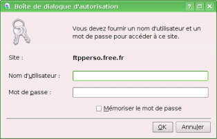
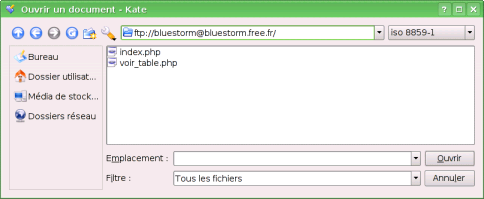
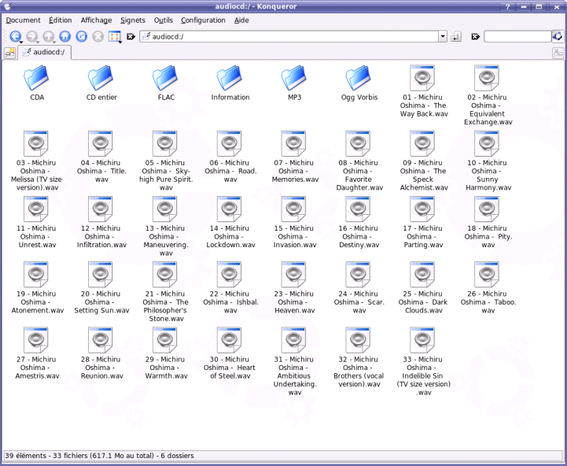
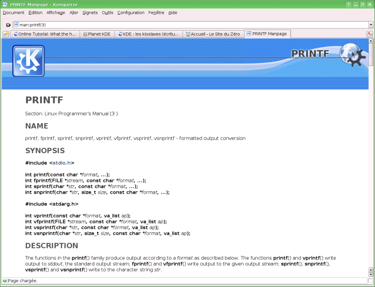

Une des propriétés les plus remarquables des programmeurs KDE est qu'ils adorent partager leur code. Quand une fonctionnalité est utile à plusieurs programmes, au lieu de la réécrire plusieurs fois, ils en font une bibliothèque séparée qu'ils utilisent dans chaque programme. Ainsi, l'amélioration d'une seule bibliothèque profite à plusieurs programmes, et les développeurs de cette bibliothèque encouragent les autres programmes de KDE à l'utiliser s'ils en ont besoin. C'est d'ailleurs un courant assez large parmi les développeurs du logiciel libre, qui provient de la philosophie UNIX ("un logiciel fait une seule tâche et il la fait bien").
Je vais vous présenter ici les KIO-slaves, un très bon exemple de cette pratique.
Les KIO-slaves représentent un des meilleurs exemples du partage de code et de fonctionnalités dans le projet KDE. L'idée est probablement venue du fait que de nombreux programmes voulaient proposer à leurs utilisateurs de travailler sur un FTP distant (de nombreux éditeurs de texte proposent cette fonctionnalité). Ils ont alors décidé de créer une méthode commune à toutes les applications KDE, qui permette d'utiliser des fichiers qui ne sont pas sur l'ordinateur de manière transparente, c'est-à-dire sans que le passage d'un fichier local à un fichier distant ne gêne l'utilisateur (pas besoin d'ouvrir un client FTP, etc.).
La méthode choisie a été de reproduire l'idée des URL : sur Linux (ou UNIX, plus généralement), les fichiers ou dossiers sont désignés par un chemin, par exemple /home/bluestorm, ou /etc/apt/sources.list, ou encore /usr/bin/ocaml. Cela ne permet d'accéder qu'aux fichiers locaux (bien que certains systèmes aient étendu cette idée à toutes sortes d'autres choses). L'idée des développeurs KDE, c'est que dans tous les endroits où un fichier local est attendu (quand vous devez ouvrir, enregistrer un fichier, envoyer un fichier par formulaire à un site web, etc.), on peut mettre une adresse, ressemblant à une URL, qui désigne un fichier qui n'est pas forcément déjà sur l'ordinateur, et que KDE va gérer tout seul l'ouverture, l'enregistrement des modifications, ou l'envoi de ce fichier.
Un exemple de KIO-slave est par exemple fish:/. Cela ressemble à un protocole dans une URL (quand vous tapez http://www.google.com, par exemple), mais c'est une KIO-slave interne à KDE. Si ce concept vous semble un peu obscur, attendez de voir des exemples d'utilisation et vous comprendrez bien mieux.
Le KIO-slave sûrement le plus utilisé est ftp:. En effet, il permet d'accéder très simplement aux fichiers se trouvant sur un FTP distant. Si vous développez un site web, cette fonctionnalité deviendra bientôt indispensable à vos yeux.
Pour aller sur un FTP distant, mettez dans la barre d'adresse ftp://hostname, hostname étant le nom du serveur FTP que vous souhaitez contacter. Par exemple : "ftp://ftpperso.free.fr".

KDE vous propose d'entrer un nom d'utilisateur et un mot de passe. Dès que vous l'aurez fait, vous pourrez naviguer sur votre FTP distant comme si c'était un répertoire présent sur votre ordinateur. Vous pouvez aussi préciser votre nom d'utilisateur en utilisant l'adresse ftp://user@hostname, par exemple : ftp://[email protected]
Coder à distance avec Kate
Imaginons que vous avez repéré un bug dans votre nouvelle application PHP. D'habitude, vous changez la version locale, puis lancez un client FTP pour synchroniser la version locale avec celle qui se trouve sur votre site. Avec les KIO-slaves, c'est beaucoup plus simple.
Dans Kate, ouvrez le dialogue d'ouverture d'un fichier (Ctrl + o). Dans la barre d'adresse en haut (qui affiche le chemin du dossier dans lequel vous avez enregistré un fichier la dernière fois), vous pouvez entrer l'adresse de votre serveur FTP, en utilisant le KIO-slave ftp:/. Un dialogue de connexion au FTP apparaît, entrez vos identifiants puis validez.

Vous voilà sur votre FTP distant. Vous remarquez qu'à part la barre d'adresse, rien n'a changé par rapport à l'ouverture de fichier local. C'est pour cela que l'on dit que les KIO-slaves sont transparents. Ouvrez le fichier qui contient le bug, éditez-le, puis enregistrez. Un petit dialogue qui ressemble à un dialogue de téléchargement apparaît, puis disparaît rapidement. C'était l'envoi de la version modifiée au FTP. Et voilà, votre fichier sur votre FTP distant a été modifié.
Cette manipulation a été faite sous Kate, mais vous pouvez la faire depuis n'importe quelle application KDE : Kdevelop, Kolourpaint, Krita, Kword... même Ksnapshot, le programme de screenshot de KDE, permet d'enregistrer directement les images sur un FTP distant.
Utiliser Konqueror comme client FTP
Quand il s'agit d'éditer un seul document situé sur un FTP, le KIO-slave fait très bien l'affaire. Mais pour déplacer plusieurs fichiers ou dossiers ? Comme vous allez le voir, il fait encore cela très bien, et même beaucoup mieux que de nombreux clients FTP.
Ouvrez Konqueror, et mettez dans la barre d'adresse l'adresse de votre serveur FTP, en utilisant la KIO-slave ftp:/. Ensuite (c'est là que se produit toute la magie), faites dans le menu "Fenêtre > Scinder la vue gauche/droite" (ou par le raccourci clavier, Ctrl + Maj + L). Hop, Konqueror se sépare en deux, et affiche deux fois le même répertoire. Qu'à cela ne tienne, allez dans la barre d'adresse et entrez-y le chemin de votre répertoire local, qui contient les fichiers que vous vouliez envoyer sur votre FTP (par exemple : /home/bluestorm/Prog/bibli). Et voilà, vous avez d'un côté votre répertoire FTP, de l'autre votre répertoire local. Vous n'avez plus qu'à faire du Drag & Drop entre les deux (cliquer sur un fichier, en laissant le bouton enfoncé, envoyez-le de l'autre côté) pour déplacer, copier et supprimer les fichiers à votre guise.
Comme vous l'avez vu précédemment, on peut accéder à un FTP distant avec le KIO-slave ftp:/. Mais il ne faut pas croire que tous les KIO-slaves sont aussi conventionnels ! audiocd:/ est un KIO-slave qui vous deviendra vite indispensable si vous encodez souvent de la musique provenant de CD audio. Mettez un CD audio dans votre lecteur de CD, et tapez dans la barre d'adresse de Konqueror : audiocd:/.

(Je remercie Diti pour son screenshot)
Vous pouvez observer plusieurs dossiers, qui dépendent des différents formats dans lesquels vous pouvez encoder vos musiques (si vous n'avez pas installé d'encodeur MP3, vous ne verrez pas de dossier mp3). Ce sont des dossiers virtuels, au sens où ils n'existent pas vraiment sur le CD. Mais si vous en sélectionnez un, et que vous le copiez dans un des dossiers de l'ordinateur (par exemple /home/bluestorm/Musique), KDE copiera le contenu de votre CD tout en l'encodant dans le format choisi (bien sûr, en naviguant dans les dossiers virtuels d'audiocd:/, vous pouvez choisir d'encoder seulement un ou plusieurs morceaux dans le format qui vous intéresse).
Évidemment, je ne peux que vous conseiller le format ogg vorbis (.ogg), un format ouvert (ce que MP3 n'est pas), et plus performant que mp3 : à qualité sonore équivalente, il est plus léger, et à poids comparable, le son est meilleur. Pour plus d'informations, consultez l'article wikipédia le concernant.
Vous connaissez sûrement la commande "man". Sinon, il faut l'apprendre immédiatement. :D Elle donne le manuel de la plupart des programmes en ligne de commande sous Linux. Essayez en console "man gcc", "man tar", "man man"... C'est une commande très pratique, entre autres parce qu'en plus elle contient les fonctions de base du langage C.
Cependant, il faut l'utiliser en ligne de commande, c'est un peu austère, et pas forcément très agréable à utiliser (personnellement, ça me convient très bien, mais je connais un certain nombre de gens qui n'apprécient pas trop). Pour cela, KDE propose le KIO-slave man:/. C'est un KIO-slave un peu différent des autres, parce qu'au lieu de proposer une manière d'atteindre de nouveaux répertoires (FTP, CD, etc.), il permet de voir différemment des fichiers. La méthode normale pour l'utiliser est man:/chemin-de-la-page-de-man. Mais comme les chemins sont un peu barbares (par exemple man:/usr/share/man/man3/errno.3), il propose aussi un mode de recherche, qui fonctionne comme ceci : si vous mettez man:/prout, il cherchera le chemin qui convient le mieux pour le mot "prout". Par exemple, man:/printf vous amènera aux pages de manuel sur printf. Il existe plusieurs catégories de pages de manuel, et donc plusieurs pages printf différentes. Pour préciser le numéro d'une catégorie, on le met entre parenthèses derrière le nom, par exemple : man:/printf(3).
On voit alors une magnifique page de manuel, agréablement (ou pas, ça dépend des goûts ;) ) mise en forme :

Pour savoir quelle catégorie choisir, c'est assez simple : si c'est une commande en console, prenez la catégorie 1 ; si c'est une fonction en C, prenez la catégorie 3. Exemple : man:/cp(1) man:/malloc(3) man:/sudo(1)
man:/ (tout court) vous proposera une liste des différentes catégories disponibles.
J'espère que cette rapide introduction aux KIO-slaves vous a donné envie de les utiliser. Ils font partie des fonctionnalités dont je ne peux plus me passer.
Si vous voulez plus de KIO-slaves, je vous invite à consulter l'aide KDE. On trouve parfois des KIO-slaves supplémentaires (par exemple, le très intéressant ipod:/ ) sur Kde Apps.
Ce tutoriel est mis à disposition sous licence creative commons . Ça signifie que vous pouvez librement copier et modifier ce tutoriel, à condition de citer l'auteur original et de conserver cette licence.